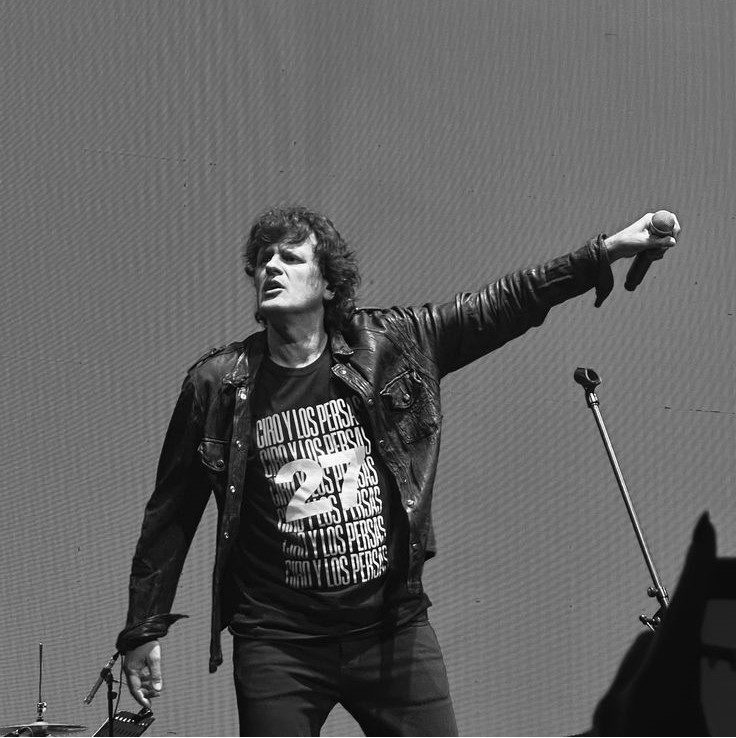

Soda Stereo
Soda Stereo es la banda de rock en español más influyente y popular de Iberoamérica. Formada en Buenos Aires en 1982, el trío estaba compuesto por Gustavo Cerati, Zeta Bosio y Charly Alberti.
escucharAirbag
Airbag es una reconocida banda argentina de rock alternativo y hard rock, formada originalmente a finales de los años 90 en Don Torcuato, Buenos Aires. Está integrada por los hermanos Patricio, Guido y Gastón Sardelli
escuchar
Ciro y los Persas
Ciro y los Persas es una de las bandas de rock más convocantes de Argentina. Fue formada en 2009 por el cantante y compositor Andrés Ciro Martínez, tras la separación de su histórica agrupación anterior, Los Piojos.
escuchar